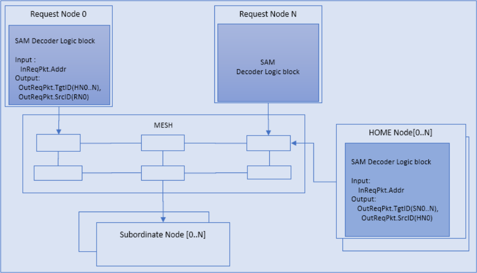
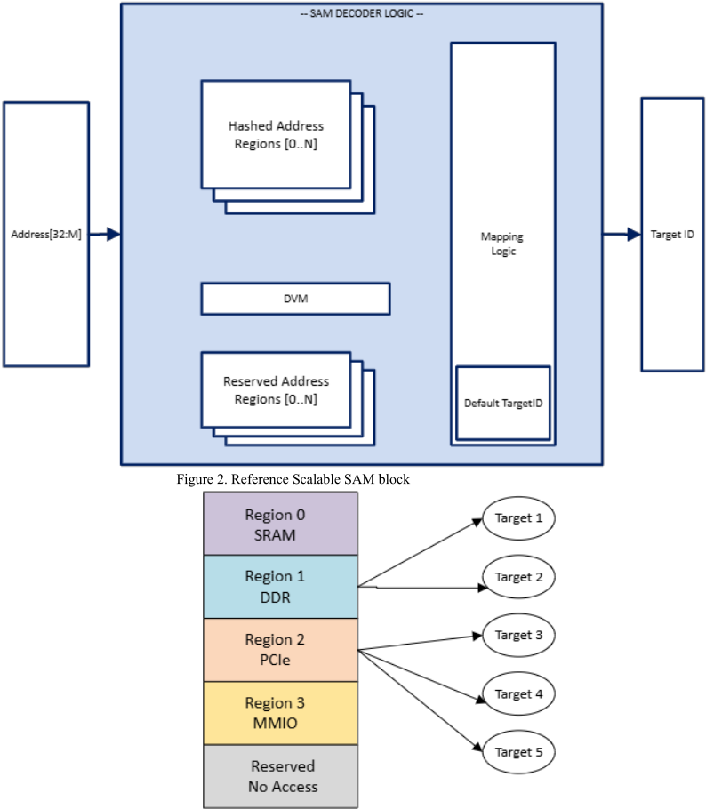
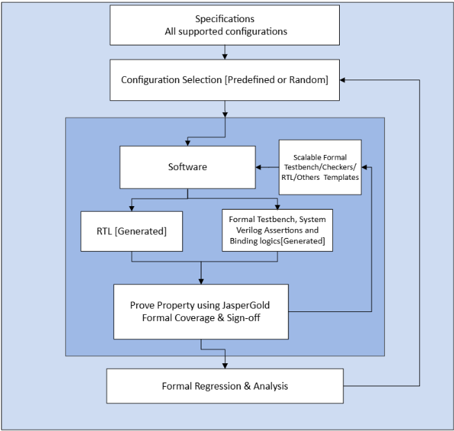
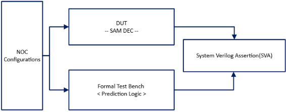
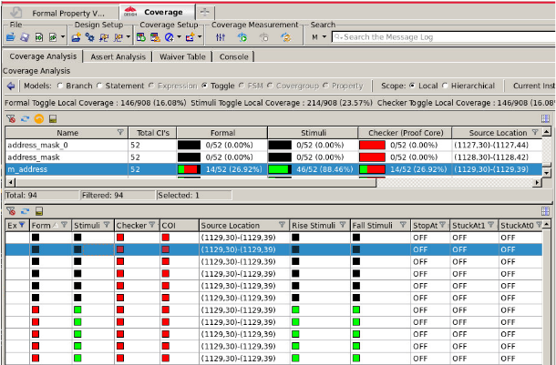
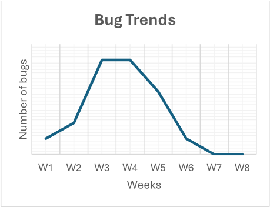

面向 NoC System Address Map（SAM）配置的可扩展形式验证框架
现代 NoC 依赖可配置的 System Address Map（SAM）完成地址到 Target ID 的解码与路由，其配置空间随地址位宽、hash 区域、保留区域、secure/non-secure 属性等参数组合急剧膨胀，传统 UVM 随机化与覆盖率驱动回归难以在项目周期内穷尽所有变体。论文提出配置驱动的可扩展形式验证框架：软件读取 SAM 配置后自动生成 RTL、formal testbench 与 SystemVerilog assertion，testbench 内置 prediction logic 计算期望 TgtID 并与 DUT 输出比对，经 bind 挂接于 SAM RTL 边界；配置按 predefined 与 randomized 两级列表选取，迭代执行 formal regression 直至覆盖全部组合。断言在 JasperGold 中求解，除 SAM 外全部 blackbox 以加速收敛，并用 Jasper Design Coverage App 完成 dead code 与 toggle/branch/statement 覆盖分析及 sign-off。该流程在多配置上发现 SAM 边界解码、地址重叠、reverse lookup 与 port_id/node_id 解码错误等 RTL 及软件生成 bug，且早于传统仿真暴露；但论文未给出量化 bug 数与运行时间数据。
可配置 NoC 中的 System Address Map（SAM）决定地址到 Target ID 的解码、路由路径与访问权限，其配置空间随地址位宽（32 到 M 位）、home agent 数量（2 到 N）、hash 算法、secure/non-secure 属性、有效与保留地址区域等参数组合急剧膨胀；传统 UVM 随机化、constrained-random verification、scoreboard 与覆盖率驱动回归难以在项目周期内穷尽全部配置变体，导致地址重叠、误路由、越权访问与协议违例等 corner-case 问题晚期才暴露，而针对每个 SAM 变体手工改造 testbench 既费人力又不可扩展。
提出配置驱动的自动形式验证框架：软件读取 NoC 微架构规格中的 SAM 配置参数（地址位宽、region 数、hash 函数、secure 属性、保留区域等），自动生成 RTL、formal testbench 与 SVA；testbench 内置 prediction logic 建模解码算法与 hash 分散函数，计算期望 TgtID 并与 DUT 实际输出比较，通过 bind 挂接到 SAM RTL 边界；配置选择分 predefined（sanity、最大配置）与 randomized 两级列表；用 JasperGold 证明属性，仅保留 SAM 逻辑、其余模块 blackbox 以加速收敛；用 Jasper Design Coverage Verification App 分析 dead code、不可达条件与 toggle/branch/statement 覆盖缺口；迭代 formal regression 遍历全部配置并支持并行回归，流程声称工具无关，可移植到 Questa Formal 与 VC Formal。
未在论文中说明
相对为每个 SAM 变体手工适配 testbench 的传统做法，主要区别在于：以配置驱动方式自动生成 formal testbench、assertion 与回归脚本，新配置无需手工更新；将 hash 分散函数显式建模进 prediction logic，处理地址空间到 TgtID 的非线性映射；通过 blackbox 策略与 formal coverage 闭环（dead code、checker gap、toggle/branch/statement）实现可 sign-off 的多配置形式回归；同时覆盖 RTL bug 与生成 RTL 的软件配置输入两类 bug 来源。
相关度级别：high
命中能力域：2.4 设计验证方法学 | 2.5 形式验证与等效性检查 | 2.7 EDA/验证自动化与 AI 辅助
理由：直接命中三个能力域：2.4（验证范围分析、配置选择策略、formal 回归与 sign-off review）、2.5（SVA property checking、JasperGold 求解、formal coverage 与 assumption 审查）、2.7（配置驱动的 testbench/assertion 自动生成、自动化回归框架与可复用方法学）。团队交付 LPDDR/HBM4/UCIe 等高速互连与存储 IP，地址解码、路由 hash、secure 访问属性检查是典型验证对象，且团队同样面临配置空间爆炸与 UVM 仿真覆盖不足的问题；该框架的配置驱动 formal 思路可直接借鉴，也与团队沉淀自动化验证方法学的方向一致。
建议动作：深入精读并做内部分享
Shivaprasad Naranapura Chandrashekara Swamy (shivaprasad.swamy@openedges.com)
Anishmon Soosai (anishmon.soosai@openedges.com) Kavin Rajendran (kavin.rajendran@openedges.com) Kranthi Konganti (kranthi.konganti@openedges.com) Openedges，美国奥斯汀
现代片上网络（Network-on-Chip, NoC）架构日益依赖可配置的系统地址映射（System Address Map, SAM）[1]，以支持多核处理器、存储子系统和专用加速器的多样化集成需求。SAM 定义了连接性、路由路径和访问权限等关键系统行为。这种灵活性使得从通用计算到领域专用加速器的各类应用都能实现可扩展的模块化设计。然而，它也带来了重大的验证挑战。每个 SAM 配置都代表一种独特的运行场景。随着设计参数——如碎片化地址空间、保留区域、哈希、路由和访问策略——的变化，可能的 SAM 变体数量迅速增长。配置空间的这种爆炸式增长使得依靠传统的基于仿真的验证方法来确保正确性变得日益困难。UVM 随机化、约束随机验证、计分板（scoreboard）和覆盖率驱动的回归测试等技术难以在典型的项目周期内探索全部配置范围。因此，诸如地址重叠、流量误路由、非预期访问和协议违规等隐蔽的边角用例（corner-case）问题往往直到设计周期后期才被发现，导致代价高昂的调试工作和进度延误。为每个 SAM 变体手动调整测试平台（testbench）不仅费时费力且容易出错，而且从根本上无法扩展。随着 NoC 设计在复杂性和可配置性方面的不断提升，验证团队面临着越来越大的压力，需要找到高效、可重复且自动化的解决方案，以跟上设计演进的步伐并确保全面的覆盖。我们开发了一种可扩展的形式验证方法学，以有效应对这一挑战。
在片上网络（Network-on-Chip, NoC）系统中，每个请求者（Requester），例如请求节点（Request Node, RN）或归属节点（Home Node, HN），都依赖系统地址映射（System Address Map, SAM）来确定每个发出请求的目标标识符（Target ID, TgtID）[CHI- B13.10.2]。SAM 定义了不同的地址范围如何分布在系统中的各个目标上，例如存储器控制器、外设或其他节点。
根据设计的不同，SAM 既可以是简单的静态映射（即所有发出的事务都使用固定的 Node ID），也可以是支持多个地址区域和重映射选项的完全可配置的分层译码。这种灵活性使 NoC 能够适应涉及 RN（一致性/非一致性）、从属节点（Subordinate Node，一致性/非一致性）和归属节点的复杂拓扑结构，尤其是在缓存一致性架构中——在这类架构中，地址所有权和路由规则因区域而异。
为确保功能正确性，SAM 必须对整个系统地址空间提供完整且准确的译码。任何未映射到有效物理组件的地址都应被重定向到专用的错误处理代理（error-handling agent），由其生成适当的错误响应。该机制确保对无效访问进行妥善处理，并提升系统的鲁棒性。
下图（图 1）展示了系统地址映射 Dec（Decoder）模块所在的 NoC 参考设计。在此配置中，RN0/Dec 逻辑利用系统地址映射（SAM）对输入地址进行译码，并生成路由标识符：TgtID = HN0..N。类似地，HN0/Dec 逻辑在归属代理（home agent）的上下文中应用 SAM 译码，产生 TgtID = SN0..N（从属节点 0）。Dec 模块的输出随后用于构建经由网络传输的 CHI 请求报文。

在初始规划阶段，我们进行了广泛的分析，以确定为实现所有系统地址映射（System Address Map, SAM）配置及运行场景的全面覆盖所需的验证范围与策略。该研究识别出大量的配置集合，以及众多派生变体。例如，地址位宽从 32 位到 M 位的各种变化、归属代理数量从 2 个到 N [Max Numbers] 个并采用多种哈希算法的可扩展性，以及图 2 中所述的安全/非安全、一致性与非一致性代理类型之间的区别。涉及有效与保留地址区域的配置还带来了额外的复杂性。
若使用传统的基于通用验证方法学（UVM）的环境或模块级环境来实现对这些场景的验证，将会极其耗时，需要投入大量精力来构建测试平台、测试用例和覆盖率模型。为了高效应对这一挑战，我们开发了一个可扩展的形式验证框架，专门用于处理 SAM 配置的复杂性与广度。

图 3 展示了一个具有多个区域的地址映射示例。由于现代系统内存架构的异构与非均匀特性，从地址映射到 Target ID 的译码逻辑映射并不总是线性的。译码逻辑必须管理多个不同的地址区域，每个区域都具有会显著影响映射关系的独特属性。当特定的高性能区域利用地址哈希将流量分发到多个端点时，会出现一个尤为关键的复杂问题。这种哈希机制打破了地址空间与 Target ID 之间简单直接的线性关系，因此需要形式验证对分散函数进行精确建模，以确保正确性。
该可扩展形式验证框架旨在无需人工干预即可自动适应不同的设计配置。它能够智能地解析配置参数，并根据区域数量、哈希函数及相关属性等因素，动态生成所需的测试平台组件和断言。生成完成后，该框架运行全面的回归测试，以确保所有属性均被成功证明。随后，使用新的配置重复相同的步骤，直到设计空间中的每一种可能组合都被覆盖，从而实现如图 4 所示的完整验证覆盖率。

以下各节描述图 4。
3.1 可扩展形式验证框架
片上网络（NoC）微架构规范概述了所支持的系统地址映射（SAM）配置，其中包括地址位宽、归属节点数量、安全属性（安全/非安全）、有效地址区域以及保留地址区域等参数[参见图 3]。
配置的识别与优先级排序对执行过程至关重要。这些配置基于合理性验证、设计就绪度和压力测试覆盖率进行选择。这里引入了两组配置列表：
预定义配置列表：建立了一组预定义配置，用于根据调度需求定义执行顺序。
示例：
合理性测试：Address_Width = 34、2 个哈希区域、分布式虚拟内存（DVM）以及一个保留区域。
最大配置测试：Address_Width = <Max_Address_Width>、Max_hash 个哈希区域、DVM、多个交错的保留区域等。
随机化配置列表：该列表的范围是引入预定义配置集中未包含的变化。
示例：保留区域可以放置在地址映射内的任意位置。例如，某些设计将保留区域置于底部、交错分布或顶部。此过程有助于确保当不同配置之间出现地址位宽变化时，译码逻辑能够得到正确实现。
软件通过读取设计配置及相关设置，自动生成寄存器传输级（RTL）代码、测试平台（testbench），并运行相应脚本。可扩展的形式化测试平台与该软件集成在一起，且测试平台与检查器（checker）均经过专门设计，以确保二者完全对齐并相互兼容。
该测试平台通过解析参数并动态生成组件与断言（assertion），能够自动适应各种不同的设计配置。
形式化测试平台中包含预测逻辑（prediction logic），该逻辑对算法及其等效的译码器（decoder）功能进行建模，以计算出用于验证的期望输出。RTL 输出信号被采集为实际值，并送入检查器中，由检查器将这些实际值与上述预测结果进行比较，如图 5 所示。为确保验证的稳健性，针对特定场景实现了 SystemVerilog 断言，以验证在所有工作条件下期望值均与 RTL 输出保持一致。图 6 中给出了参考演示代码。

| Feature | Test plan |
|---|---|
| Parameters | Perform static assertion checks for parameter values, such as verifying the size of ADDR_WIDTH, NODE_ID_WIDTH…etc |
| TgtID, NodeID Check | Model the TgtID and Node IDs in the testbench and ensure they match the actual RTL values |
| Reverse Lookup logic | Ensure that the node IDs and port IDs returned from the home nodes generate the correct reverse IDs for routing packets to the Request node |
| Boundary Address | Ensure that address regions are properly aligned and do not overlap with other regions. |
| Error Scenarios | Verify that reserved regions trigger an error flag and return the default home agent ID as TgtID |
| Hash Function | Verify Hash equations are getting implemented correctly |
| ….. | …. |
| Assumptions | Review all assumptions with the design team and obtain sign-off |
| Formal Coverage | Review code coverage, dead code, unreachable code, stimuli, checkers and COI…etc |
| Feature | Test plan |
//--- Example Demo Code // Inputs from DUT(Decoding logic) input dut_valid; input [51:0] dut_addr; input [15:0] dut_tgtid; // Generated Code bit [1:0] NUM_SAM_REGIONS 3 bit [`ADDR_WIDTH-1:0] SAM_START_ADDR [NUM_SAM_REGIONS] = '{REGION0_START_ADDR, REGION1_START _ADDR,REGION2_ST_ADDR}; bit [`ADDR WIDTH-1:0] SAM END ADDR [NUM_SAM_REGIONS] = '{REGION0_END_ADDR, REGION1 END ADDR, REGION2_END ADDR}; bit [`TGTID WIDTH-1:0] SAM TGTID [NUM_SAM_REGIONS] = '{TGTID0,TGTID1,TGTID2}; 1/- Common functions // Example : To Generate TgtID for (int i = 0; i < NUM SAM REGIONS; i++) begin if (addr inside {[SAM_START_ADDR[i] : SAM_END_ADDR[i]]}) return SAM_TGTID[i]; end return 'habcd; // InValid Address region endfunction 1/-- Checkers //SVA_01: TgtID compare/Check of DUT Vs Tbench property sam_tgtid_compare_p; @(posedge clk) disable iff (!reset_n) dut_valid |->(dut_tgtid == TbTgtIDGen(dut_addr)); endproperty SAM_TGTID_VALUE_CHK : assert property (sam_tgtid_compare_p) //SVA_02: Flag the fail if input dut_addr doesn't find any match >> >> //SVA_03: Hash function check //SVA_04: Error flag check >> >> //SVA_05: Static/Configuration Checks <<…>>
Formal testbench is bound at the SAM rtl boundary.
Example binding : bind noc_sam_dec_dut noc_addr_dec_fpv noc_addr_dec_fpv_inst (.*)
所有 SystemVerilog 断言均使用 JasperGold（Cadence 的形式验证平台）进行了形式化证明。在属性证明阶段，发现了若干设计和软件缺陷，其中包括在项目早期即被识别出的关键问题，为整体工作提供了重要价值。为了优化运行时间并降低复杂度，形式分析仅保留了 SAM 逻辑，而所有其他设计组件均被黑盒化。这种方法实现了高效的属性收敛，并加速了缺陷检测，同时未影响验证覆盖率。
采用 Jasper Design Coverage Verification App 进行形式覆盖率分析，以识别死代码、结构上不可能出现的条件、检查器缺口以及代码覆盖率缺口，包括翻转覆盖率、分支覆盖率和语句覆盖率。与设计团队开展了大量评审工作，以确保所有形式验证活动得到妥善签核。当前环境与工具无关，可以在 Questa Formal 和 VC Formal 等其他形式验证平台上无缝运行。此外，还对多种配置变体进行了全面的人工评审，以验证生成过程的正确性。在签核过程中，对所有假设逻辑进行了彻底评审，以确保形式流程未被过度约束。来自 Jasper 覆盖率应用的示例图 7 提供了更多细节。黑色表示死代码，红色表示不可达等。

A comprehensive formal regression flow was implemented to systematically execute all configuration combinations defined in the verification plan. After each successful run, the process returned to the configuration selection step to pick new combinations and repeat the execution cycle. This iterative approach continued until every configuration was exercised, all properties were proven without failures, and associated reviews were completed and signed off. The methodology ensured exhaustive coverage across all design variations, minimized gaps in property validation, and delivered a robust verification closure. By automating the regression and integrating review checkpoints, the flow provided predictable convergence, improved efficiency, and reduced the risk of missed scenarios.
RTL 发现：在 SAM 地址区域之间观察到了边界译码问题，形式化验证平台揭示了越界地址以及与重叠相关的缺陷。反向查找逻辑也暴露出问题，某些端口与节点 ID 组合会产生错误的输出。此外，在一致性（coherent）与非一致性（non-coherent）节点中均发现了 port_id 和 node_id 的译码错误。死代码（Dead code）与不可达代码（Unreachable code）分析有助于清理冗余代码，并添加相关的形式化检查。
软件（SW）发现：在基于仿真的流程中，对特定且复杂的 NoC 配置进行激励往往发生在项目进度的后期。通过采用形式化方法，我们实现了快速周转以及对 NoC 各代设计的早期验证，从而能够更快地发现并解决潜在问题。形式化验证有助于揭示关键的用户可配置输入，例如存储器大小、哈希区域和模式，以及保留区域。

如图 8 所示，缺陷趋势图表明，形式化验证方法在验证开发周期的早期就发现了大量 RTL 和软件缺陷。这些数据对应于某一特定的 NoC 配置，在其他配置中也观察到了类似的模式。相比之下，传统仿真通常要到验证过程的后期才会暴露此类问题。
该方法学在设计上可随着新 SAM 变体的引入而高效扩展。它支持迭代式设计变更，无需手动更新验证平台或断言。此外，它还支持并行形式化回归，能够以极小的开销同时验证多个配置。这种并行性显著提升了吞吐量，并缩短了验证周期的周转时间。
该框架已发现多个 NoC/RTL 生成问题，包括仅靠仿真难以检测的软件相关缺陷。其中一些问题包括配置错误的路由路径、错误的地址译码逻辑以及非预期的访问权限。形式化覆盖率指标证实，关键边界条件和复杂的路由交互均得到了充分激励。该框架还识别出了死代码和激励缺口，使工程师能够完善其设计并提升整体质量。
除缺陷检测之外，该方法学还增强了可追溯性和文档化。它会生成结构化报告，汇总断言结果、覆盖率指标以及针对特定配置的洞察。这些报告帮助团队跟踪验证进度、识别薄弱环节，并就设计就绪度做出明智决策。通过将重复且易出错的任务自动化，该方法学使验证工程师能够专注于更高层次的分析和架构决策。它还促进了跨项目的复用与一致性，使得
跨多个设计扩展验证工作变得更加容易。
总而言之，我们的形式验证方法学为验证现代片上网络（NoC）设计中的高度可配置系统地址映射（SAM）提供了一种实用、可扩展且由自动化驱动的解决方案。通过将形式验证与智能自动化相结合，我们构建了一个稳健的框架，能够满足当今复杂且可重构的片上系统（SoC）环境的需求。该方法提升了对设计正确性的信心，加快了项目进度，并降低了工程风险——使其成为下一代基于 NoC 的系统验证工具箱中一项宝贵的补充。